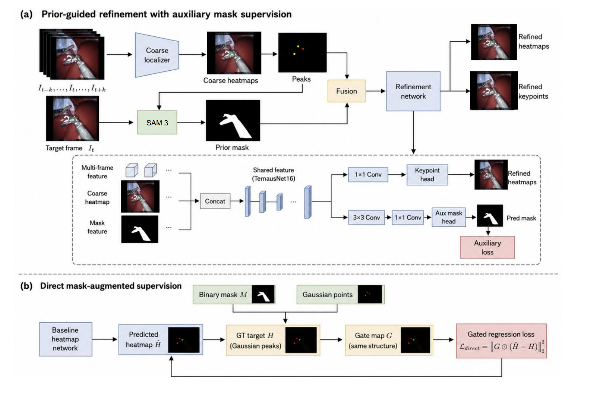
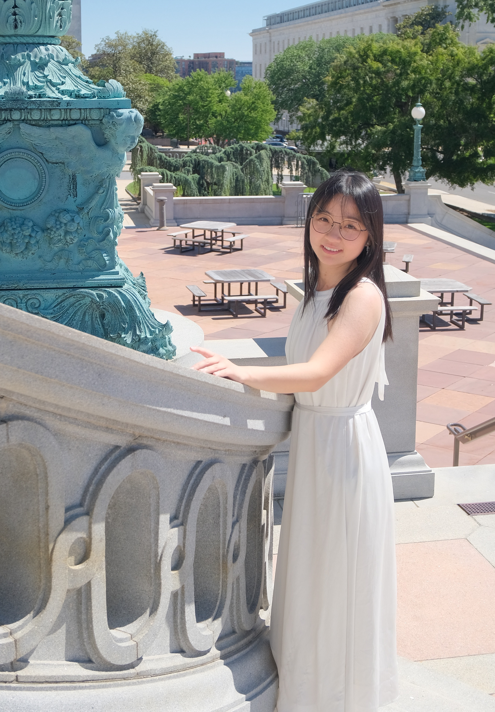
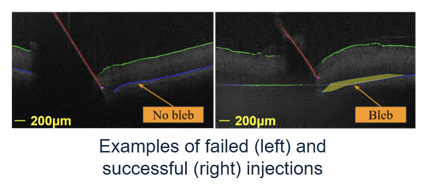

Chenyan Jing
I recently completed my M.S.E. in Robotics at Johns Hopkins University.
My research interests lie at the intersection of computer vision, surgical AI, and robotic perception, with a focus on surgical video understanding, functional landmark localization, medical robotics, and perception systems that support intelligent decision-making in complex environments.
More broadly, I am interested in how visual representations can connect perception, prediction, and action, and in building models that help intelligent systems understand scenes, reason about tool–tissue interactions, and support safe robotic autonomy.
If you would like to discuss research opportunities, please feel free to reach out via email.
Email:
jingchenyan7@gmail.com
CV:
PDF
Google Scholar:
profile
GitHub:
jingchenyan3030

Selected Publications

Predictive Retinal Motion Compensation for Robotic Subretinal Injection
Manuscript under review
A vision-based framework for retinal motion estimation and temporal forecasting to support safer robotic subretinal injection.
Under Review
Selected Projects
Monocular 3D Human Pose and Metric Depth Estimation
Combined YOLOv8 keypoint detection and Depth Anything V2 to recover monocular 3D human pose, calibrate metric scale, and back-project image-space landmarks using camera intrinsics.
UR5 Robotic Drawing and Manipulation
Implemented inverse kinematics, resolved-rate motion control, and executable trajectory generation for a UR5 robotic drawing task.